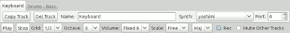

Desfonema Sequencer Manual
0. Installation
0.1 Requirements
You need a linux system widh:
- Python 2.4 or greater
- Python development libraries
- Alsa development libraries
- Python GTK Bindings
- aconnect util from Alsa Utils package
Supposing that you are using Debian or Ubuntu you can installall of them by:
apt-get install python-dev libasound2-dev python-gtk2 alsa-utils
Desfonema Sequencer is a midi sequencer, so you gonna need some midi synth's to actually hear any sound. If you didn't already then you gonna want to install Yoshimi, Hidrogen, etc and install the low latency audio daemon Jack to use them.
0.2 Download, Unpackage, Compile modules
The most basic instructions are:
wget http://www.desfonema.com.ar/dseq-0.3.1.tar.bz2
tar -xjvf dseq-0.3.1.tar.bz2
cd dseq-0.3.1
sh make_modules.sh
0.3 Test Run
Try python dseq.py
and if everything was ok you should see the main window.
1. The Main Window
When you start the dseq (Desfonema Sequencer) you find the Main Window. There you have the Toolbar, the Patterns section and the Song Section.
In dseq you create patterns that you later arrange in order to make a song, very much like in a traditional tracker, so the very first thing you wanna do is to Add a Pattern.
Once you have some patterns you Add them into the Song list so you can actually listen them in order.
1.1 Main Window Menu
The Main Window Menu has a very basic and self explanatory File menu with commands like New, Open, Save, Save As, and Quit. Also has some less obvious options:
- File->Import Patterns: Import the patterns from another song.
- File->Import Seq24 Sequences: Import the sequences from a Seq24 song.
- Patterns->Add Pattern: Add New Pattern to the Pattern list.
- Patterns->Paste Pattern: Add New Pattern from Clipboard.
1.2 Toolbar
- Add Pattern: Add New Pattern to the Pattern list.
- Paste Pattern: Add New Pattern from Clipboard.
- Bpm: Song bitrate.
- Pos: Pattern position to play in the Song list.
- Play/Stop: Play/Stop the Song.
1.3 Patterns Section
Once you have one or more patterns the Patterns Section starts to get populated. For each pattern you have a set of controls
- Edit Pattern: Open the pattern in the Pattern Editor.
- Copy Pattern: Copy the pattern to the Clipboard.
- Del Pattern: Delete the pattern.
- Name: Pattern name.
- Play: Play the pattern once.
1.4 Song Section
To append a new pattern at the end of the Song use the Add button on top of the Song Section.
With the existing patterns into the song list you have
- Pattern position into the song.
- Pattern Selection: Selects the pattern played in that position.
- Del: Deletes the pattern in that position.
- Ins: Inserts the same pattern after the position.
2. The Pattern Editor
The patter editor is where you work most of the time. Each pattern has one or more tracks of the same length. You have 3 controls that are common for the whole pattern:

- Add Track: Adds a new track to the pattern (Alt+T).
- Paste Track: Adds a new track from the clipboard to the pattern (Alt+P).
- MIDI Input: Select MIDI Input Device.
- Len: Pattern length.
After that you have the tracks in a tabbed interface.
2.1 Track Tabs

Each track is represented in a tab with the set of controls and a piano roll interface for editing.
The controls are:
- Play/Stop: Play/Stop pattern. From the Piano Roll you can turn Play/Stop with Ctrl+p.
- Grid: Size of the grid (and quantimization). From the Piano Roll you can change it using Crtl+1 to 4.
- Octave: Octave in wich notes are inserted from the virtual keyboard input. From the Piano Roll you can change the Octave with Ctrl+Up and Ctrl+Down
- Volume: Volume level at which new notes are inserted. From the Piano Roll you can change it with Keypad + and -. Also changes the volume of selected notes.
- Scale: Filter notes to be in the range of a chosen major or minor scale.
- Rec: Turn recording on/off. From the Piano Roll you can turn Play/Stop with Ctrl+r.
- Mute Other Tracks: Solo mode on/off. From the Piano Roll you can turn Play/Stop with Ctrl+m.
3. The Piano Roll
The Piano Roll is the main interface where you insert and edit notes in each track. It has live editing while playing the pattern or step mode when the pattern is stopped.
You can insert notes just from the midi input, or use the virtual keyboard, or use the mouse like. The cursor is always selecting the note it's over.
To select an area you have to always go from upper-left to bottom-right. Keyboard shortcuts are provided for the standard actions like copy, cut and paste.
Also delete and backspace are used to delete all the notes in the cursor position and move forward or backward.
The Piano Roll is designed with a heavy keyboard use in mind, but as gtk is a little bit tricky with focus you will have to click on it to let it grab the keyboard. I'm working to improve that.
3.1 The Insert Cursor
When you insert notes in step edit mode they go where the insert cursor is, like in a text editor. You can move the insert cursor
with the Mouse Center Button:
Or with the cursor keys:
3.2 Inserting notes
You can insert notes using the mouse right button:
Or you can insert notes trough the virtual keyboard:
Or you can use your favorite midi input device.
3.3 Selecting Notes
You select notes holding down the Shift Key and moving with the Cursor Keys:
Or by selecting with the mouse holding the left button:
3.4 Moving Notes
You move notes holding down the Alt Key and moving with the Cursor Keys:
Or holding down the Shift Key and dragging them with the mouse holding the left button:
3.5 Stretching Notes
You stretch notes holding down the Ctrl Key and moving with the Cursor Keys:
Or holding down the Ctrl Key and dragging them with the mouse holding the left button: